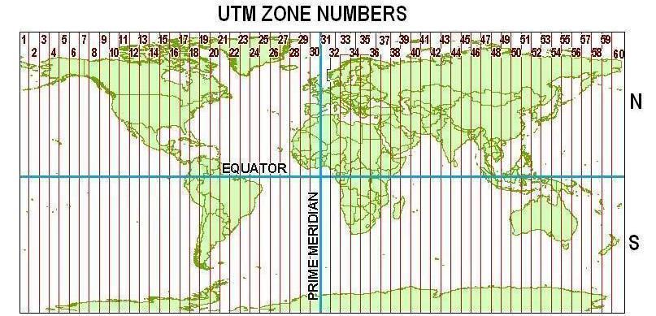

Causal Inference with Spatial Data
(ArcGIS 10 for Economics Research)
Lecture 3
Buffer
Masayuki Kudamatsu
28 August, 2018
Press SPACE to proceed.
To go back to the previous slide, press SHIFT+SPACE.
Buffer tool in ArcGIS
Create a polygon of an input feature's neighborhood
Point
|
Polyline | Polygon |
Buffer tool in ArcGIS (cont.)
Buffer + Spatial Join $\Rightarrow$
$\Rightarrow$ Identify neighbors for each point
This is useful for economics research for (at least) 3 reasons
Buffer tool for economics research
1. Generate a treatment variable
Estimate the impact of shale gas wells on house prices in their neighborhood
- Houses within 2km of wells: treated
Buffer tool for economics research (cont.)
2. Estimate spillover effects of treatment
 (Image source)
(Image source)
RCT on deworming school children
# of treated schools within 6km can be identified by Buffer tool
Buffer tool for economics research (cont.)
3. Mitigate omitted variable bias in peer effect estimation
Today's road map
1. Conley & Udry (2010)
2. UTM projections
3. Replicate Conley & Udry (2010)
4. Loop over files in Python
1. Conley & Udry (2010)
Research Question
Do farmers learn from their peers regarding input use (fertilizer) for new technology (pineapple)?
Important?
- If yes, only a few farmers need to be subsidized for universal adoption
Original?
- Overcome econometric issues of identifying the impact of peer behavior
Feasible?
- Very detailed data collection, including plot locations
Data
Panel household surveys (every 6 week in 1996-98) in 3 villages of southern Ghana
- Amount of fertilizer used
- Whom they turn for advice on farming
- Plot location, collected by GPS receiver (cf. Lecture 1)
Empirical specification
Define: \begin{align*} M_{i,t} \equiv \frac{GoodNews(x_{j,s-5}) \times (x_{j,s-5} - x_{i,t_p})}{Experience_{it}} \end{align*}
| $GoodNews(x_{j,s-5})$ | Higher-than-expected profit for farmer $j$ ($i$'s friend) from using $x_{j,s-5}$ units of fertilizer, observed by $i$ in period $s \in [t_p,t]$ |
| $x_{i,t_p}$ | $i$'s use of fertilizer at period $t_p$ (i.e. previous planting) |
| $Experience_{it}$ | $i$'s experience of planting pineapple |
Empirical specification (cont.)
Then estimate: \begin{align*} \Delta x_{i,t} = \beta_1 M_{i,t} + \beta_2 \Gamma_{i,t} + \boldsymbol{z}'_{i,t}\boldsymbol{\beta_3} + \nu_{it} \end{align*}
| $\Delta x_{i,t}$ | Changes in fertilizer use since $t_p$ |
| $\Gamma_{i,t}$ | Growing condition for $i$'s plot at period $t$ |
| $\boldsymbol{z}'_{i,t}$ | Other controls |
$\Gamma_{i,t}$ controls for common shocks to $i$ and $i$'s friends \begin{align*} \Gamma_{i,t} \equiv x_{i,t}^{close} - x_{i,t_p} \end{align*} where $x_{i,t}^{close}$ averages fertilizer use over plots within 1km from $i$ during previous 3 periods
We will learn how to identify plots within 1km from $i$
Source of identification: Friends outside 1km radius
(Figure 4 of Conley & Udery 2010)
Empirical specification (cont.)
\begin{align*} \Delta x_{i,t} = \beta_1 M_{i,t} + \beta_2 \Gamma_{i,t} + \boldsymbol{z}'_{i,t}\boldsymbol{\beta_3} + \nu_{it} \end{align*}
Standard errors: calculated by Conley (1999)
Which is now the standard procedure for cross-sectional regression with spatial data
Conley (1999) standard error
Let $\mathbf{b}$ denote a vector of coefficients estimated by OLS
Variance of OLS estimator: \begin{align*} V(\mathbf{b}) = (\mathbf{X}'\mathbf{X})^{-1}\mathbf{X}'E(\boldsymbol{\varepsilon}\boldsymbol{\varepsilon}')\mathbf{X}(\mathbf{X}'\mathbf{X})^{-1} \end{align*}
| $\mathbf{X}$ | $n$ (# of obs.) by $k$ (# of regressors) data matrix |
| $\boldsymbol{\varepsilon}$ | $n$-dimensional vector of the error term |
Conley (1999) standard error (cont.)
Let $\rho_{ij}$ denote $ij$-th element of $E(\boldsymbol{\varepsilon}\boldsymbol{\varepsilon}')$
- Error term's correlation between $i$ & $j$
Conley (1999) imposes $\rho_{ij} = K_{ij}\hat{\varepsilon}_i\hat{\varepsilon}_j$ where
\begin{align*} K_{ij} \equiv \left\{ \begin{array}{cl} (1-\frac{x_{ij}}{\bar{x}})(1-\frac{y_{ij}}{\bar{y}}) & \mbox{if $x_{ij}<\bar{x}$ & $y_{ij} < \bar{y}$} \\ 0 & \mbox{otherwise} \end{array} \right. \end{align*}
| $x_{ij}, y_{ij}$ | Distance between $i$ & $j$ in x,y dimension |
| $\bar{x},\bar{y}$ | Cut-off value chosen by researcher (1.5km in Conley-Udry 2010) |
| $\hat{\varepsilon}_i$ | OLS residual for $i$ |
Conley (1999) standard error (cont.)
Tim Conley's website offers Stata ado files for implementing Conley (1999) for OLS, GMM, and Logit
In this ado program, $x_{ij},y_{ij}$ is calculated from the coordinates of $i$ and $j$
Make sure to use a projected coordinate system (cf. Lecture 1)
Conley (1999) standard error (cont.)
Conley's (1999) Stata ado cannot be used for panel regressions...
Hsiang (2010) extends it to a panel data, with a new Stata ado
- Non-parametrically accounts for serial correlation
- Allows you to use uniform kernel ($K_{ij}=1$ within cutoff)
- Compatible with geographic coordinate systems (cf. Lecture 1)
Main results
(Table 5 of Conley & Udry 2010)
Prepare for the rest of this lecture
1. Launch ArcMap 10 (it takes time)
2. Download the zipped dataset for lecture 3
3. Save it to Desktop (C:\\Users\\yourname\\Desktop)
- Don't save in the remote server, which slows down ArcGIS
4. Right-click it and choose 7-Zip > Extract to "Lecture3\"
-
So the directory path will be:
C:\\Users\\yourname\\Desktop\\Lecture3
Prepare for the rest of this lecture (cont.)
Now in ArcMap's Catalogue Window:
5. Establish connection to data folder
- Right-click Folder Connections
- Select Connect to Folder
- Choose Desktop > Lecture3
6. Prepare the Model Builder
- Create a Model
-
Save it as "
code/models.tbx/lecture3
2. UTM projections
Coordinate systems for Buffer tool
Buffer tool requires distance calculation
Geographic coordinate system works with points only
e.g., 500km buffer from several points on the earth
Otherwise, use UTM projections
What is UTM?
Stands for Universal Transverse Mercator
Project earth surface onto the cylinder that is tangent on standard meridian

Father away from standard meridian, more distortion
What is UTM? (cont.)
To minimize distortion:
1. Divide Earth into 60 zones (6° wide in longitude)
What is UTM? (cont.)
2. For each zone, set standard meridian in the middle
3. Scale down distance along standard meridian by 0.9996
- This number is called scale factor
- 0.9996 minimizes overall distortion w/i the 6°-wide zone
UTM in ArcGIS
120 UTM projections available
- Northern- and southern hemispheres for each of 60 Zones
Pick the appropriate zone for your study area
- In Conley and Udry (2010), it should be UTM 30 North.
- In Lecture 6, we use several UTM zones covering India to calculate river length
3. Replicate Conley & Udry (2010)
Data we want to construct
Conley and Udry (2010) construct the growing condition variable as
\begin{align*} \Gamma_{it} \equiv x_{it}^{close} - x_{it_p} \end{align*}
| $x_{it}^{close}$ | Average of $x_{ks}$ |
| $k$ | Plots within 1km from plot $i$ |
| $s$ | $\in \{t-3, t-2, t-1, t \}$ |
Data we want to construct
Conley and Udry (2010) construct the growing condition variable as
\begin{align*} \Gamma_{it} \equiv x_{it}^{close} - x_{it_p} \end{align*}
| $x_{it}^{close}$ | Average of $x_{ks}$ |
| $k$ | Plots within 1km from plot $i$ |
| $s$ | $\in \{t-3, t-2, t-1, t \}$ |
Input data we have
Browse the plot location data (Lecture3/input/udry2010.csv) with Notepad
- This file was created from the replication data file for Conley and Udry (2010)
- If you do a survey with GPS receiver, you will have a XY data like this one
village hh plot: plot identifier
Xcoord Ycoord: plot coordinate in meters
Exercise #1
Create plot point features
Which geo-processing tool(s) do we need to use? (answer)
Exercise #1: Step 1
Make XY Event Layer
XY Table: ...\Lecture3\input\udry2010.csv
X Field: Xcoord
Y Field: Ycoord
Spatial Reference: WGS_1984_UTM_Zone_30N
- Click
- Navigate to Projected Coordinate Systems > UTM > WGS 1984 > Northern Hemisphere
Leave the other options as they are.
Exercise #1: Step 2
Copy Features
Input Features: udry2010_Layer
- The output from Make XY Event Layer
Output Feature Class: ...\Lecture3\temporary\plots.shp
Exercise #1 (cont.)
Now save and run the Model.
Browse the output. You should see something like this:
Browse the attritube table, too. Is everything as expected?
Exercise #2
Match each plot with its neighbors
Geo-processing tools to be used for this exercise:
1. Buffer (Analysis)
- Create 1km radius circle polygon around each plot
2. Spatial Join
- Match each circle polygon w/ plots within
Exercise #2: Step 1
Buffer (Analysis)
Input Features: plots.shp
- The output from Copy Features (in Exercise 1)
Output Feature Class: ...\Lecture3\temporary\buffer1km.shp
Distance: Linear unit / 1 / Kilometers
- Check "Field" if buffer size differs across features
Dissolve Type: NONE
- Select ALL or LIST to make overlapping buffers as one polygon
Exercise #2: Step 1 (cont.)
Now save and run the Model.
Browse the output. You should see something like this:
Browse the attribute table of the output. Notice that field names are all the same as plots.shp
Exercise #2: Step 2
Spatial Join
Target Feature Class: buffer1km.shp
- The output from Buffer
Join Features: plots.shp
- The output from Copy Features (in Exercise 1)
Output Feature Class: ...\Lecture3\temporary\plot_neighbors.shp
Spatial Join (cont.)
Join Operation: JOIN_ONE_TO_MANY
- To match all plots within 1km radius
Check "Keep All Target Features"
- We want to know which plots have no neighbor
Field Map of Join Features: see next slide
Match Option: INTERSECT
Field Map for Spatial Join
Supposed to allow you to control which fields to be kept
When exported as a Python script, it tends to misbehave...
- All values become zero, for example
Best solution: delete everything
- If Field Map is unspecified, it will (paradoxically) keep all the fields
Field Map for Spatial Join (cont.)
When target and join features have the same set of fields
$\Rightarrow$ Fields from join features are suffixed with "_1"
Exercise #2: Step 2 (cont.)
Now save and run the Model.
Browse the output and its attribute table
- You may find that none of the join feature fields is included
- This seems to be a Model Builder's bug
- We will fix this when we use Python
Exercise #3
Export attribute table
Which geo-processing tool(s) do we use? (cf. Lec 2 Ex 3)
Exercise #3 (cont.)
If you prefer Excel...
Table To Excel
-
Input Table:
plot_neighbors.shp -
Output Excel File:
...\Lecture3\output\plot_neighbors.xls
Exercise #3 (cont.)
If you prefer ASCII...
Export Feature Attribute to ASCII
Input Feature Class: plot_neighbors.shp
Value Field: see next slide
Delimiter: SPACE
- Not COMMA, to avoid confusing with decimal mark
Output ASCII File: ...\Lecture3\output\plot_neighbors.txt
Check "Add Field Name to Output"
Exercise #3 (cont.)
Value Fields
From target features: village, hhn, plot, startrnd
From join features: village_1, hhn_1, plot_1, startrnd_1
- These are not shown if Spatial Join fails to include them.
- We will fix this when we use Python
"Model" model for Lecture 3
Look at models.tbx/exercises1-3 in the folder solutions4exercises/
Exercise #4
Write a Python script
Export the model as a Python script (cf. Lec 2 Ex 4)
The last three commands should look like this:
# Process: Spatial Join
arcpy.SpatialJoin_analysis(buffer1km_shp, plots_shp, plot_neighbors_shp, "JOIN_ONE_TO_MANY", "KEEP_ALL", "", "INTERSECT", "", "")
# Process: Table To Excel
arcpy.TableToExcel_conversion(plot_neighbors_shp, plot_neighbors_xls, "NAME", "CODE")
# Process: Export Feature Attribute to ASCII
arcpy.ExportXYv_stats(plot_neighbors_shp, "village;hhn;plot", "SPACE", plot_neighbors_txt, "ADD_FIELD_NAMES")
Exercise #4
Write a Python script
Export the model as a Python script (cf. Lec 2 Ex 4)
The last three commands should look like this:
# Process: Spatial Join
arcpy.SpatialJoin_analysis(buffer1km_shp, plots_shp, plot_neighbors_shp, "JOIN_ONE_TO_MANY", "KEEP_ALL", "", "INTERSECT", "", "")
# Process: Table To Excel
arcpy.TableToExcel_conversion(plot_neighbors_shp, plot_neighbors_xls, "NAME", "CODE")
# Process: Export Feature Attribute to ASCII
arcpy.ExportXYv_stats(plot_neighbors_shp, "village;hhn;plot", "SPACE", plot_neighbors_txt, "ADD_FIELD_NAMES")
This is where you specify fields to keep
- Each field name is delimited with semi-colon (;)
Change this to "village;hhn;plot;village_1;hhn_1;plot_1"
Exercise #4 (cont.)
Then edit the script by using the template (Lecture3\code\template4L3.py)
- Try-Except statement (Lec 2 Ex 6)
- String variables for file names (Lec 2 Ex 7)
- Print commands (Lec 2 Ex 8)
- Close any outputs in ArcMap or Excel (Why?)
- Run the script
Exercise #4 (cont.)
Browse the output
Select one plot neighborhood polygon
Browse the attribute table
Count # of matched plots for this selected plot
See if the same # of plot points are located within the polygon
4. Loop over files in Python
Intermediate files
Quite a few tools often required to create just one output
Each tool creates its own output
We don't need these intermediate files
$\Rightarrow$ Loop over files allows you to delete all intermediate files automatically
Delete files automatically
1. Add prefix "xx" to all intermediate file names
plots_shp = "xxplots.shp"
buffer1km_shp = "xxbuffer1km.shp"
plot_neighbor_shp = "xxplot_neighbor.shp"
Delete files automatically (cont.)
2. Add the following command lines
fcList = arcpy.ListFeatureClasses("xx*")
for fc in fcList:
print fc + " is being deleted"
arcpy.Delete_management(fc)
$\Rightarrow$ All the files with the name of "xx..." in the working directory will be deleted
fcList = arcpy.ListFeatureClasses("xx*")
List Feature Classes method
creates a list of names of shapefiles in the working directory (specified by arcpy.env.workspace)
File names can be specified in ( )
- xx*: all file names starting with xx
fcList = arcpy.ListFeatureClasses("xx*")
List in Python
List Feature Classes method returns a list
Think of a list in Python as a vector
We assign the variable name fcList to this list
fcList = arcpy.ListFeatureClasses("xx*")
for fc in fcList:
arcpy.Delete_management(fc)
Loop over list
Assign a variable name fc to 1st item in fcList
Then execute all the indented lines below
Once done, assign fc to the 2nd item in fcList
And so forth, until the last item in fcList
fcList = arcpy.ListFeatureClasses("xx*")
for fc in fcList:
arcpy.Delete_management(fc)
Delete method
Delete the file specified in ( )
You cannot delete more than one file name
That's why we need the loop over file name list
Display which file is being deleted
fcList = arcpy.ListFeatureClasses("xx*")
for fc in fcList:
print fc + " is being deleted"
arcpy.Delete_management(fc)
Variable fc contains a string of file name
Use + to concatenate strings
Exercise #5
Delete interemediate files
1. Rename intermediate shapefiles to "xx***.shp"
- We just need to change one line per file, thanks to using string variables
2. Uncomment the command lines for deleting files
- Review Lec 2 Ex 9 for how to uncomment command lines
3. Save and run the script (press F5)
Other types of loop in Python
Other types of files
- ListDatasets: for any datasets
- ListRasters: for raster (Lecture 8)
- ListTables: for attribute tables
Fields (i.e. columns in attribute table)
- ListFields
Numbers (Lecture 6)
Model Python Script for Lecture 3
Look at "solutions4exercises/lec3script.py" in the downloaded data folder for Lecture 3
What we've learned on ArcGIS
- Match each point w/ its neighboring points (i.e. w/i a radius of certain distance)
- Loop over files
- Delete a file
Do you remember which geo-processing tools you used for each of these tasks?